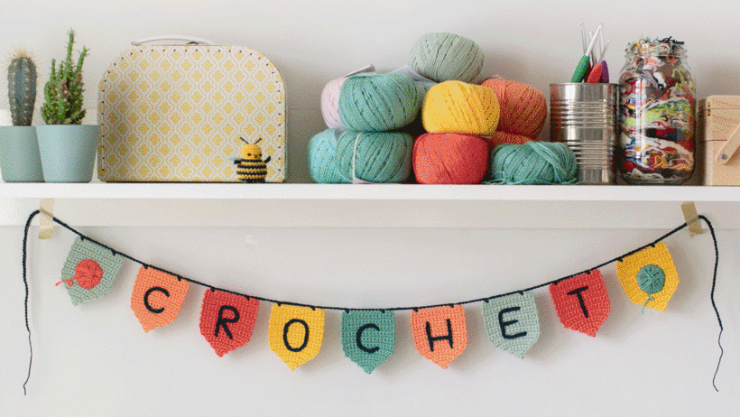
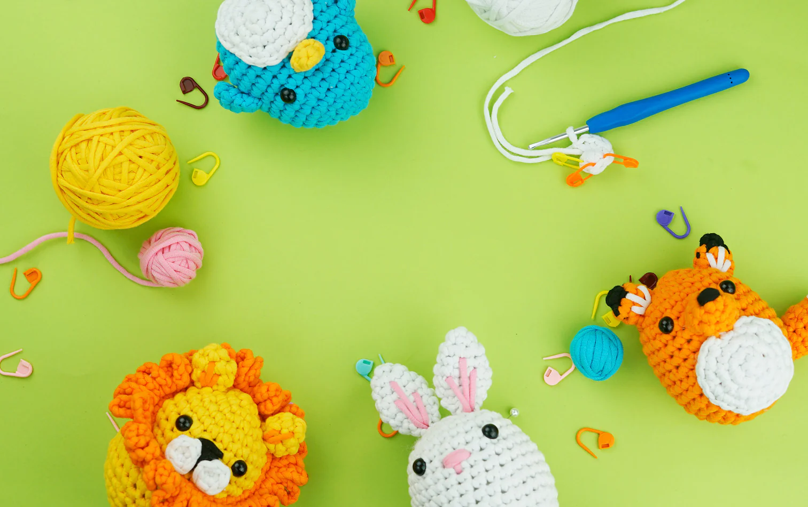

Crafty Critters!

Welcome to our Crafty Critters pricing guide, where we bring your favorite animals to life, one stitch at a time! At Crafty Critters, we pride ourselves on offering high-quality, handcrafted crochet animals that are as charming as they are cuddly. Here's a breakdown of our pricing:
Welcome to 'Crafty Critters,' your one-stop destination for adorable crochet animal creations!
Standard Crochet Animals:
Our standard crochet animals come in a variety of sizes and designs, ranging from small keychain companions to larger decorative pieces. Prices for these critters typically start at $15 and can go up to $50, depending on the complexity of the design and the materials used.
Custom Orders:
Looking for something extra special? We also offer custom crochet animal orders tailored to your preferences. Whether you have a specific animal in mind, want to personalize a design, or need a custom size, we're here to bring your vision to life. Custom orders are priced based on factors such as size, complexity, and any additional design elements, with prices starting at $30 and going up from there.
Pattern Kits:
For those who prefer to create their own crochet animals, we offer pattern kits that include all the materials and instructions you need to make your own adorable critter. Prices for pattern kits vary depending on the complexity of the design and the materials included, with kits starting at $10 and going up to $30.
Special Collections:
Throughout the year, we release special collections featuring themed crochet animals perfect for holidays, seasons, or special occasions. These limited-edition collections may include exclusive designs and premium materials, with prices starting at $20 and going up from there.
Bulk Orders:
Planning a special event or looking for unique gifts for a group? We offer discounts on bulk orders of crochet animals, making it easy to spread joy and handmade charm to your friends, family, or colleagues. Contact us directly for pricing and customization options for bulk orders.
SHIPPING & HANDLING:
Please note that prices listed above do not include shipping and handling fees, which may vary depending on your location and the size of your order. We offer fast and reliable shipping options to ensure that your crochet animals arrive safely and promptly.

Thank you for considering Crafty Critters for your handmade crochet animal needs. We can't wait to bring a little extra warmth and whimsy into your life with our adorable creations!